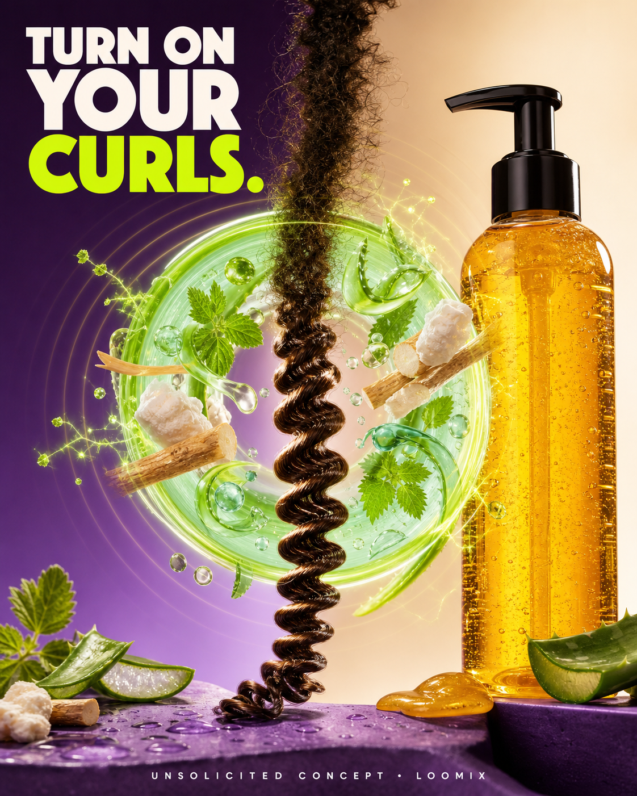

Curly Magic — Turn On Your Curls.
A loose, frizzy strand enters a glowing botanical activation ring. Aloe slip, marshmallow root, and nettle energy organize the strand as it exits elongated, glossy, springy, and sharply defined.
Create with LoomixView official product
Hook options
8-second storyboard
Open on one loosely frizzy natural-hair strand.
Reveal the Curly Magic-inspired amber gel bottle.
Build a glowing ring from aloe, marshmallow root, and nettle.
Send the strand through botanical slip and motion waves.
Reveal elongated, glossy, springy definition.
End on bottle, activation ring, hook, and CTA.
Caption direction
Made for rapid testing
Loomix turns one product image into a storyboard, short-video direction, captions, and ready-to-post ad copy.
This is an unsolicited creative concept made by Loomix for demonstration purposes. Loomix is not affiliated with or endorsed by Uncle Funky's Daughter.